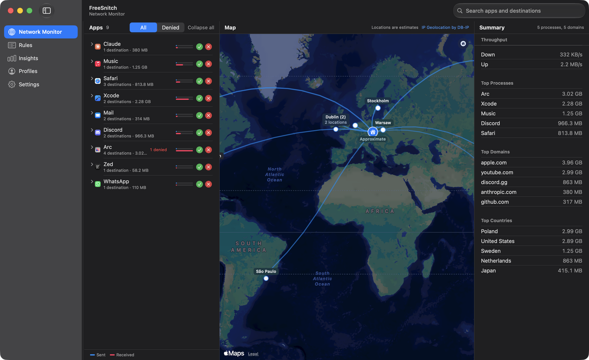
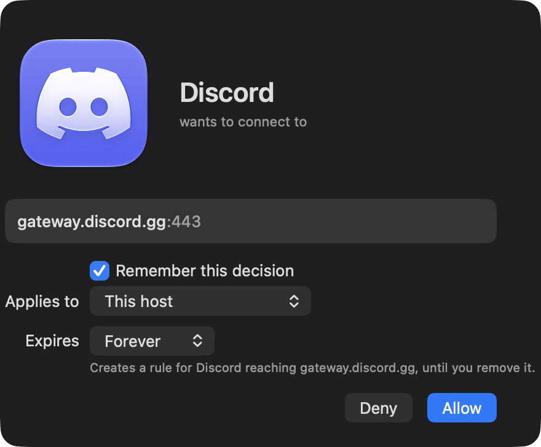
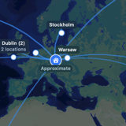
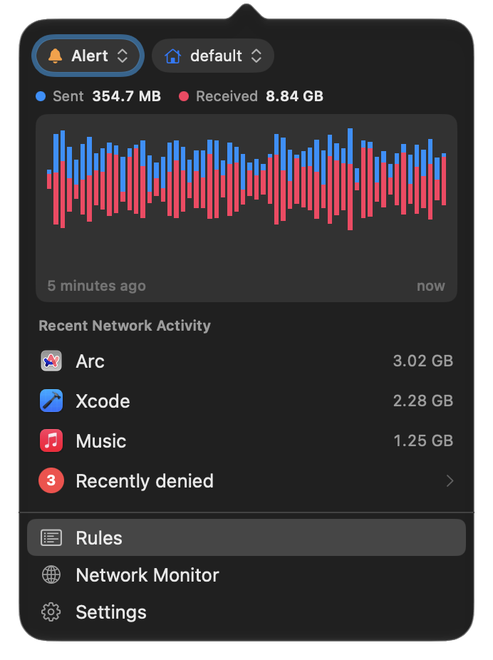
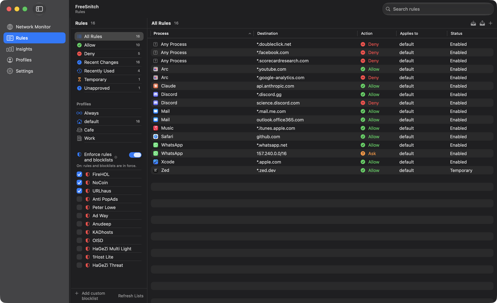
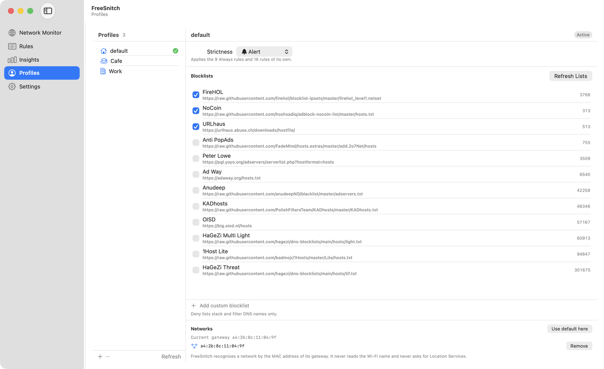

See every app that talks to the internet.
A free, open-source firewall for your Mac. It shows who connects where, and asks before anything new gets out.


Start with what you want
FreeSnitch watches every connection 
Allow once, or for good.
When an app reaches somewhere new, FreeSnitch asks. Pick the host, the app or the port, and how long the answer lasts. The menu bar shows what is happening right now.

Rules you can read.
Every rule says which app, where, and whether it is in force where you are. Pick an app from the list or drop it on the page. Blocklists and DNS over HTTPS sit next to them.
Everything it does
Stricter at the café.
Make a place for home, work or the café, and choose how strict FreeSnitch is there. It knows where you are from the network you join, without asking for your location.

It fails open.
If FreeSnitch stops answering, your internet keeps working. A broken firewall never becomes an outage.
Signed and notarized.
Built with a Developer ID and checked by Apple. Updates are verified with a signature before they install.
Nothing phones home.
No analytics, no account, no licence check. It only contacts the blocklists and DNS you pick, and its update feed.
How it compares.
Between the inbound-only firewall built into macOS and the paid outbound firewalls.
Where it stops
Blocklists work on names
They don't stop apps that connect to a fixed address, or that look names up with their own encrypted DNS, like Chrome or Firefox with DoH on.
The map is an estimate
Locations come from offline IP data, not measurement.
Blocking is opt-in
Out of the box FreeSnitch only watches. Rules and blocklists start when you turn on Enforcement in Settings.
Install it in a minute.
Download 1.1.0 · 12.5 MBDrag to Applications
Open the disk image and drag FreeSnitch into Applications.
Allow the helper
System Settings, General, Login Items & Extensions: allow FreeSnitch in the background.
Approve the filter
When macOS asks, allow the FreeSnitch system extension. It does the per-app filtering.
SHA-256 f15857e6e328936b1623cfe309c1d7a357d1150f77fbe2e24a8ed7c1650382cd